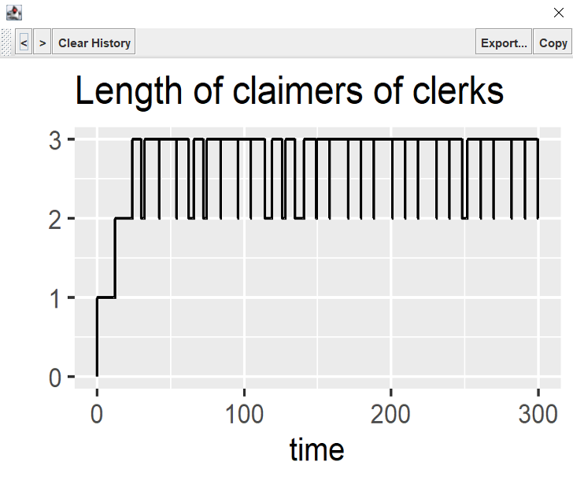

Monitors
Monitors are a way to collect data from the simulation. They are automatically collected for resources, components, states and collections. On top of that the user can define her own monitors.
Monitors can be used to get statistics and as a feed for graphical tools.
There are two types of monitors:
- Level monitors are useful to collect data about a variable that keeps its value over a certain length of time, such as the length of a queue or the color of a traffic light.
- Non-level monitors are useful to collect data about that occur just once. Examples, are the length of stay in a queue, or the number of processing steps of a part.
For both types, the time is always collected, along with the value.
Monitors support a wide range of statistical properties via m.statistics() including
- mean
- median
- percentiles
- min and max
- standard deviation
- histograms
For all these statistics, it is possible to exclude zero entries,
e.g. m.statistics(statistics=true) returns the mean, excluding zero entries.
Monitors can be disabled with disable() by setting the boolean flag ``.
m.disable() // disable monitoring
m.reset() // reenable statistics monitoring
m.reset(initialValue) // reenable level monitoring
Continuation of a temporarily disabled monitor is currently not supported.
Non level monitors
Non-level monitors collects values which do not reflect a level, e.g. the processing time of a part.
There are 2 implementations to support categorical and numerical attributes
org.kalasim.NumericStatisticMonitororg.kalasim.FrequencyMonitor
Besides, it is possible to get all collected values as list with m.statistics().values.
Calling m.reset() will clear all tallied values.
Level monitor
Level monitors tally levels along with the current (simulation) time. E.g. the number of parts a machine is working on.
There are 2 implementations to support categorical and numerical attributes
org.kalasim.CategoryTimelineorg.kalasim.MetricTimeline
Level monitors allow to query the value at a specific time
val nlm = MetricTimeline()
// ... collecting some data ...
nlm[4] // will print the value at time 4
In addition to standard statistics, level monitor support the following statistics
- duration
For all statistics, it is possible to exclude zero entries, e.g. m.statistics(excludeZeros=true).mean returns the mean, excluding zero entries.
{todo} implement off tallying
Calling m.reset() will clear all tallied values and timestamps.
The statistics of a level monitor can be printed with m.printStatistics().
Histograms
The statistics of a monitor can be printed with printStatistics().
E.g: waitingLine.lengthOfStayMonitor.printStatistics():
{
"all": {
"entries": 5,
"ninety_pct_quantile": 4.142020545932034,
"median": 1.836,
"mean": 1.211,
"ninetyfive_pct_quantile": 4.142020545932034,
"standard_deviation": 1.836
},
"excl_zeros": {
"entries": 2,
"ninety_pct_quantile": 4.142020545932034,
"median": 1.576,
"mean": 3.027,
"ninetyfive_pct_quantile": 4.142020545932034,
"standard_deviation": 1.576
}
}
And, a histogram can be printed with printHistogram(). E.g.
waitingLine.lengthOfStayMonitor.printHistogram():
Histogram of: 'Available quantity of fuel_pump'
bin | entries | pct |
[146.45, 151.81] | 1 | .33 | *************
[151.81, 157.16] | 0 | .00 |
[157.16, 162.52] | 0 | .00 |
[162.52, 167.87] | 0 | .00 |
[167.87, 173.23] | 1 | .33 | *************
[173.23, 178.58] | 0 | .00 |
[178.58, 183.94] | 0 | .00 |
[183.94, 189.29] | 0 | .00 |
[189.29, 194.65] | 0 | .00 |
[194.65, 200.00] | 1 | .33 | *************
If neither binCount, nor lowerBound nor upperBound are specified, the histogram will be autoscaled.
Histograms can be printed with their values, instead of bins. This is particularly useful for non numeric tallied values, such as names::
val m = FrequencyMonitor<Car>()
m.addValue(AUDI)
m.addValue(AUDI)
m.addValue(VW)
repeat(4) { m. addValue(PORSCHE)}
m.printHistogram()
The output of this:
Summary of: 'FrequencyMonitor.2'
# Records: 7
# Levels: 3
Histogram of: 'FrequencyMonitor.2'
bin | entries | pct |
AUDI | 2 | .29 | ***********
VW | 1 | .14 | ******
PORSCHE | 4 | .57 | ***********************
It is also possible to specify the values to be shown:
m.printHistogram(values = listOf(AUDI, TOYOTA))
This results in a further aggregated histogram view where non-selected values are agregated and listes values are forced in the display even if they were not observed.
Summary of: 'FrequencyMonitor.1'
# Records: 7
# Levels: 3
Histogram of: 'FrequencyMonitor.1'
bin | entries | pct |
AUDI | 2 | .29 | ***********
TOYOTA | 0 | .00 |
rest | 5 | .71 | *****************************
It is also possible to sort the histogram on the weight (or number of entries) of the value:
m.printHistogram(sortByWeight = true)
The output of this:
Summary of: 'FrequencyMonitor.1'
# Records: 7
# Levels: 3
Histogram of: 'FrequencyMonitor.1'
bin | entries | pct |
PORSCHE | 4 | .57 | ***********************
AUDI | 2 | .29 | ***********
VW | 1 | .14 | ******
For numeric monitors it is possible to show values instead of ranges as bins
val nlm = MetricTimeline()
now += 2
nlm.addValue(2)
now += 2
nlm.addValue(6)
now += 4
nlm.printHistogram(valueBins = false)
nlm.printHistogram(valueBins = true)
which will result by default in
Histogram of: 'MetricTimeline.1'
bin | entries | pct |
[.00, .60] | 232 | .23 | *********
[.60, 1.20] | 0 | .00 |
[1.20, 1.80] | 0 | .00 |
[1.80, 2.40] | 233 | .23 | *********
[2.40, 3.00] | 0 | .00 |
[3.00, 3.60] | 0 | .00 |
[3.60, 4.20] | 0 | .00 |
[4.20, 4.80] | 0 | .00 |
[4.80, 5.40] | 0 | .00 |
[5.40, 6.00] | 535 | .54 | *********************
Histogram of: 'MetricTimeline.1'
bin | entries | pct |
0.0 | 2 | .25 | **********
2.0 | 2 | .25 | **********
6.0 | 4 | .50 | ********************
Merging of Monitors
Tt is possible to merge the resulting statistics of multiple monitors
val flmA = CategoryTimeline(1)
val flmB = CategoryTimeline(2)
// ... run simulation
val mergedStats: EnumeratedDistribution<Int> = listOf(flmA, flmB).mergeStats()
See MergeMonitorTests for more examples regarding the other monitor types.
Slicing of monitors
Note: Slicing of monitors as in salabim is not yet supported. If needed please file a ticket.
Use-cases for slicing are
- to get statistics on a monitor with respect to a given time period, most likely a subrun
- to get statistics on a monitor with respect to a recurring time period, like hour 0-1, hour 0-2, etc.
Summarizing a monitor
Monitor.statistics() returns a 'frozen' monitor that can be used to store the results not depending on the current environment. This is particularly useful for persisting monitor statistics for later analysis.
Visualization
It is possible to render monitors with the following extension functions
NumericStatisticMonitor.display()
MetricTimeline.display()

In particular multiple outputs are supported here by the underlying kravis visualization windows, which allows forward backward navigation (via the arrow buttons). See org.kalasim.examples.bank.resources.Bank3ClerksResources for an example where multiple visualizing are combined to inspect the internal state of the simulation.
Note that, currently monitor visualization just works in retrospect, and it is not (yet) possible to view the progression while a simulation is still running.